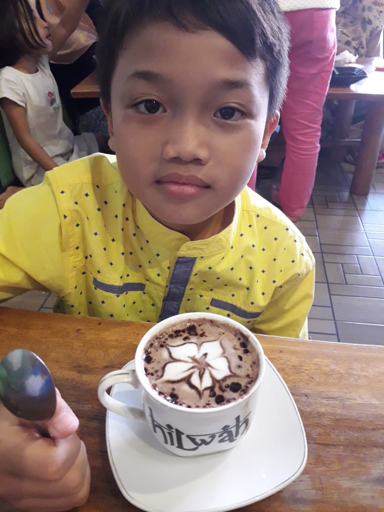

BIODATA DIRI MAHASISWASelamat datang di halaman profil pribadi saya |
|||||||||||||
|
 Status: Mahasiswa Aktif Fakultas: Ilmu Komputer Universitas: Universitas Kuningan |
Informasi Pribadi
Tentang SayaSaya adalah seorang mahasiswa semester 3 yang memiliki ketertarikan tinggi pada pengembangan aplikasi web, analisis sistem, serta desain antarmuka pengguna karena saya mahasiswa Sistem Informasi. Saya selalu bersemangat mempelajari teknologi baru. |
||||||||||||
|
© 2026 Tugas Desain Web - Universitas Kuningan |
|||||||||||||